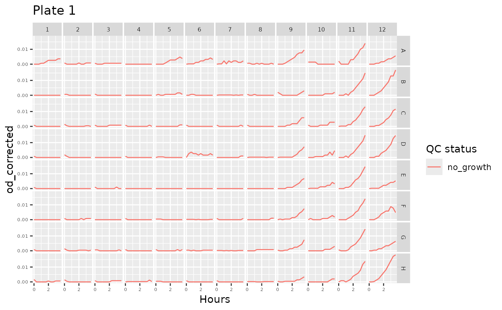

Plot growth curves for one plate
plot_plate.RdDraws one panel per well for a single plate, with the well laid out on the
plate grid when well ids are row-column names (such as "A01", as from the
LogPhase600 readers) and in a square-ish grid otherwise (such as the
Bioscreen's "001" to "100"). Each curve is coloured by its QC status,
built from whichever of the flag columns added by flag_od_range() and
flag_no_growth() are present in data. Wells with no flags are "ok";
wells with several flags show them joined with +.
Usage
plot_plate(
data,
plate = NULL,
od = NULL,
flags = NULL,
smooth = FALSE,
window = 5,
scales = "fixed"
)Arguments
- data
Tidy data frame from a reader, optionally with QC columns.
- plate
plate_idof the plate to draw. Can be omitted ifdataholds a single plate or has noplate_idcolumn.- od
Name of the OD column to plot. Defaults to
"od_corrected"if present, otherwise"od".- flags
Names of logical flag columns to colour by. Defaults to all of
flag_saturated,flag_negativeandflag_no_growthfound indata.- smooth
If
TRUE, overlay the smoothed curve (solid) on the raw curve (dashed, faded). Uses the<od>_rollmeancolumn if present, otherwise computes it withsmooth_od().- window
Window size used if the smoothed curve has to be computed.
- scales
Panel scales, passed to
ggplot2::facet_wrap()orggplot2::facet_grid():"fixed"(default) or"free_y".
Examples
f <- system.file("extdata", "logphase600_example.txt", package = "plateReadeR")
d <- read_logphase_txt(f)
d <- flag_no_growth(blank_correct(flag_od_range(d, saturation = 2)))
plot_plate(d)
